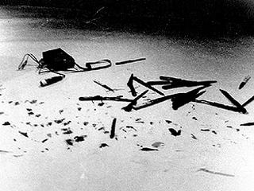

Rhythm 10
1973.
Rhythm 10 was first performed by Marina Abramović in Edinburgh in 1973 as part of her Rhythm series. The following year, she performed Rhythm 0 (1974), in which she offered herself as an object of experimentation for the audience, as well as Rhythm 5 (1974), where she lay in the centre of a burning five-point star to the point of losing consciousness. Abramović joined Lisson Gallery in 2010, when a retrospective of her career was shown at the gallery, including the Rhythm series.
Recalling the making of Abramović comments: "the idea of death terrifies me. When there is turbulence on an airplane, I shake with fear. I start composing my last will and testament. But when it comes to my work, I cast caution to the winds. That is how I felt about Rhythm 10, the piece I planned to perform at Edinburgh. Rhythm 10 was absolutely crazy, It was based on a drinking game played by Russian and Yugoslav peasants: you spread your fingers out on a wooden bar or table and stab down a sharp knife, fast, in the spaces between your fingers. Every time you miss and cut yourself, you have to take another drink. The drunker you get, the more likely you are to stab yourself. Like Russian roulette, it is a game of bravery and foolishness and despair and darkness – the perfect Slavic game. Beforehand, I was so nervous that I was scared I’d get one of my incapacitating whole-body migraines. I could hardly breathe from the idea that I was going to do this. But I was also serious about what I was about to do, 100 per cent committed. I was so serious about everything then! Yet I think I needed this gravity. Much later on, I read a statement of Bruce Nauman’s: 'Art is a matter of life and death.' It sounds melodramatic, but it’s so true. This was exactly how it was for me, even at the beginning. Art was life and death. There was nothing else. It was so serious, and so necessary.


My variation on the game involved not one but ten knives, and sound, and a new idea: turning accidents into the plan for a piece of performance art. On the floor of the gymnasium of Melville College – one of the sites of the festival – I unrolled a big sheet of heavy white paper. On this paper I arranged ten knives of various sizes and two tape recorders. Then, with a big crowd watching – including Joseph Beuys at the front, in his little grey fedora – I knelt down on the paper and turned on one of the tape recorders. I had been terrified beforehand, but the second I began, my fear evaporated. The space I occupied was safe. Rat-tat-tat-tat-tat – I stabbed the knife down between the fingers of my left hand, and fast as I could. And of course because I was going so fast, every once in a while I would miss, just slightly, and nick myself. Each time I cut myself, I would groan with pain – the tape recorder would pick it up – and I would switch to the next knife.

Pretty soon I had gone through all ten knives, and the white paper was stained very impressively with my blood. The crowd, including Beuys, stared, dead silent. And a very strange feeling came over me, something I had never dreamed of: it was as if electricity was running through my body, and the audience and I had become one. A single organism. The sense of danger in the room had united the onlookers and me in that moment: the here and now, and nowhere else.
That thing that each of us loves with, that you are your own little self privately – once you step into the performance space, you are acting from a higher self, and it’s not you anymore. It’s not the you that you know. It’s something else. There on the gymnasium floor of Melville College in Edinburgh, Scotland, it was as if I had become, at the same time, a receiver and transmitter of huge, Tesla-like energy. The fear was gone, the pain was gone. I had become a Marina whom I didn’t know yet." - Marina Abramović, Walk Through Walls, A Memoir, 2016
The Rhythm Series showcased Abramović’s commitment to pushing her own limits and exploring the relationship between artist, art, and audience. Her willingness to sacrifice her body and endure pain brought forth a new understanding of performance art, making her one of the most influential artists of our time. Through the Rhythm Series, Marina Abramović taught us that sometimes, the most profound art lies in the act of surrendering oneself to the unknown.
Autori: AI 47/2021 Milica Kekić, AI 45/2021 Danijel Stoilković, AI 35/2021 Uroš Perić